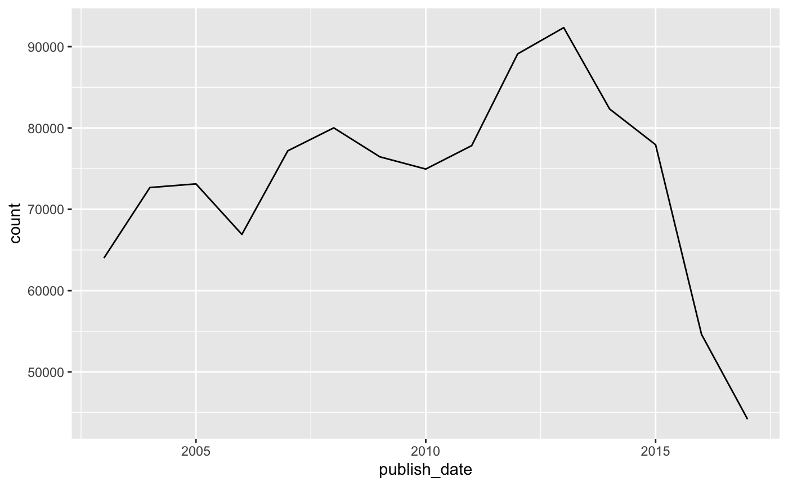

This notebook showcases the pins package ability to help you share and reuse tidy datasets with others. We will make use of the “A Million News Headlines” dataset from kaggle.com/therohk/million-headlines.
As a start, lets retrieve the dataset using pins and load is using readr:
## Parsed with column specification:
## cols(
## publish_date = col_double(),
## headline_text = col_character()
## )## # A tibble: 1,103,663 x 2
## publish_date headline_text
## <dbl> <chr>
## 1 20030219 aba decides against community broadcasting licence
## 2 20030219 act fire witnesses must be aware of defamation
## 3 20030219 a g calls for infrastructure protection summit
## 4 20030219 air nz staff in aust strike for pay rise
## 5 20030219 air nz strike to affect australian travellers
## 6 20030219 ambitious olsson wins triple jump
## 7 20030219 antic delighted with record breaking barca
## 8 20030219 aussie qualifier stosur wastes four memphis match
## 9 20030219 aust addresses un security council over iraq
## 10 20030219 australia is locked into war timetable opp
## # … with 1,103,653 more rowsFirst, lets clean up this dataset. For instance, the ‘publish_date’ column is a character, not a date:
## Warning: package 'dplyr' was built under R version 3.5.2##
## Attaching package: 'dplyr'## The following objects are masked from 'package:stats':
##
## filter, lag## The following objects are masked from 'package:base':
##
## intersect, setdiff, setequal, unionnews_cleaned <- news %>%
mutate(publish_date = as.Date(as.character(publish_date), format = "%Y%m%d"))
news_cleaned## # A tibble: 1,103,663 x 2
## publish_date headline_text
## <date> <chr>
## 1 2003-02-19 aba decides against community broadcasting licence
## 2 2003-02-19 act fire witnesses must be aware of defamation
## 3 2003-02-19 a g calls for infrastructure protection summit
## 4 2003-02-19 air nz staff in aust strike for pay rise
## 5 2003-02-19 air nz strike to affect australian travellers
## 6 2003-02-19 ambitious olsson wins triple jump
## 7 2003-02-19 antic delighted with record breaking barca
## 8 2003-02-19 aussie qualifier stosur wastes four memphis match
## 9 2003-02-19 aust addresses un security council over iraq
## 10 2003-02-19 australia is locked into war timetable opp
## # … with 1,103,653 more rowsLets also assume we are interested in understanding when news outlets publish news, not what headlines are published. For this, we can keep the counts per day and month and throw away the other columns:
We can now plot by month the total amount of news being produced by this news outlet:
## Warning: package 'ggplot2' was built under R version 3.5.2news_totals %>%
group_by(publish_date = lubridate::floor_date(publish_date, "year")) %>%
summarize(count = sum(count)) %>%
ggplot(aes(x=publish_date, y=count)) +
geom_line() 
Now, while this might complete our particular analysis, others in your team might be interested in easily fetching your tidied data set, which you can now easily share with pins in any available board. The following example uses RStudio Connect but this board can also be replaced to use Kaggle, GitHub or even custom boards:
You can then use the board’s user interface to share this pin with others. A colleague can now reuse your tidy dataset by fetching it from the applicable board:
## # A tibble: 5,422 x 2
## publish_date count
## <date> <int>
## 1 2003-02-19 198
## 2 2003-02-20 250
## 3 2003-02-21 250
## 4 2003-02-22 126
## 5 2003-02-23 136
## 6 2003-02-24 250
## 7 2003-02-25 250
## 8 2003-02-26 250
## 9 2003-02-27 222
## 10 2003-02-28 249
## # … with 5,412 more rowsYou can preview the RStudio Connect pin for this tidy dataset at beta.rstudioconnect.com/connect/#/apps/6522/access or preview this bellow: